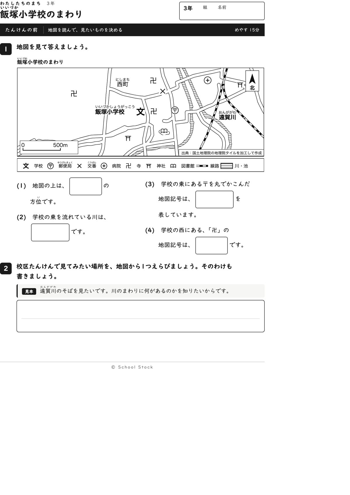
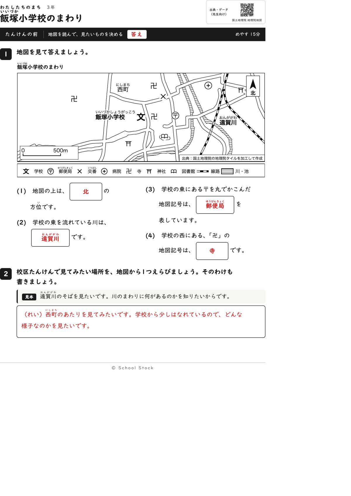
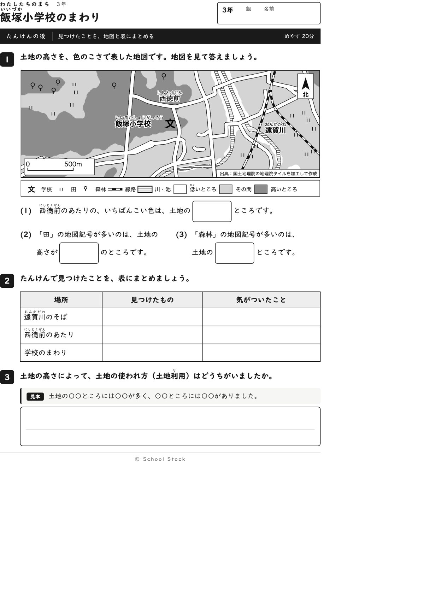
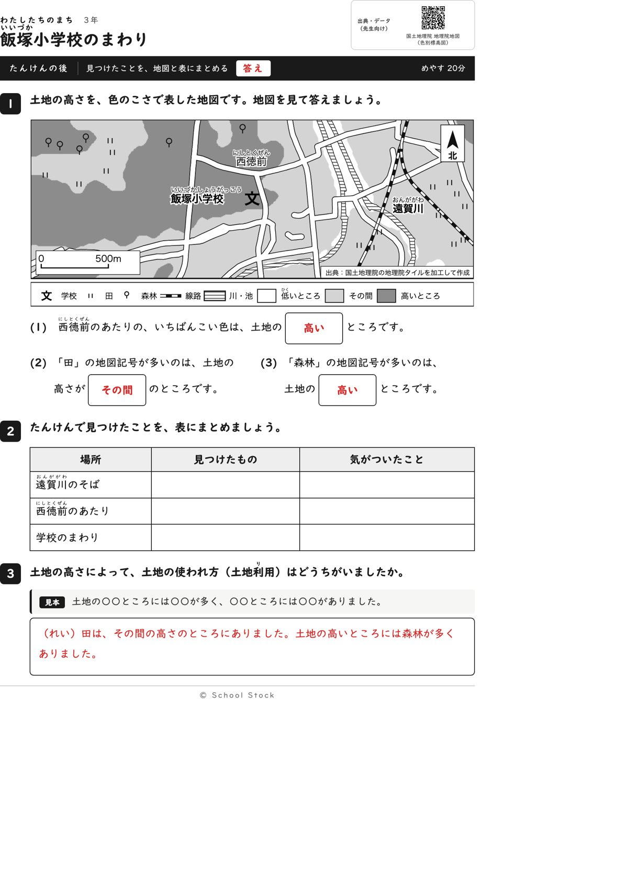
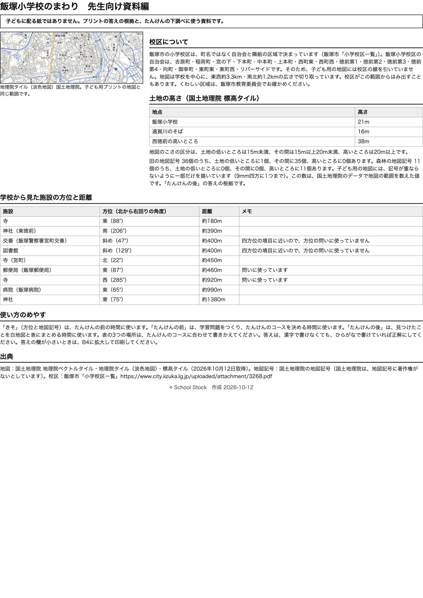

紙





直すところ
直すところはありません。
1回目のレビューで出た直し（2件・道具を直して作り直しました）
| 紙 | どこ | 何が困るか |
|---|---|---|
| たんけんの後 | 3番の問いの文「土地の高いところと低いところで、土地の使われ方はどうちがいましたか」 | この校区は、田が「その間」、森林が「高い」で、低いところには田も森林もほとんどありません。低いところを聞かれて、子どもが書く内容がありません。答えの例の内容とも合いません。 |
| たんけんの後 | 2番の表の3行目「西町のあたり」 | 表に出ている西町は、その紙の地図に名前がなく、子どもが指して確かめられません。 |
2回目のレビューで出た直し（1件・道具を直して作り直しました）
| 紙 | どこ | 何が困るか |
|---|---|---|
| たんけんの後 | 地図の左下の縮尺（0、500m、ものさしの線） | 縮尺の「0」と線が道路の輪郭線の上に乗り、「500m」のmも道路の縁に触れています。読めますが、文字が道路と重なっています。前の紙の同じ場所にも、うすい道路の線が重なっています。 |
専門家団の声（いまの紙を見て）
香月八重筆頭・全学年
2回目の指摘は縮尺と道路の重なりだけで、直っています。前の紙は、郵便局は東、寺は西、川は遠賀川と、地図から一つに決まります。後の3番は、土地の高さと使われ方を問う形で、答えの例（田はその間、森林は高い）と合っています。3年の学習に収まっていて、問いも階段になっています。学校の文のすぐ東に寺の記号がありますが、実際の寺なので直しは求めません。
日隈耕平社会
田36個中35個がその間、森林11個すべてが高いところで、地図と資料編が合っています。郵便局は約460m東、西の寺は約920mで、方位の表とも合っています。縮尺は白い地に載り、文字と道路が重なっていません。校名と地名も白ふち付きで読めます。学校のすぐ東にある名前のない川の帯は、先生が一声かければ足ります。事実の誤りではありません。
藤川湊すぐ終わる子
後の3番は型に「その間」「高い」を入れれば書けます。前の紙は2分で終わります。
田淵さくら例がないと止まる子
後の紙は、(2)の「その間」と3番の問いが同じ言葉でつながり、迷いません。前の紙は見本と例があって安心です。
轟大和読む前に諦める子
前の紙は郵便局も寺も記号を見て探せるので動けます。後の紙は問いが短く、白紙にはなりません。左下のものさしは白い地の上にあり、道路と重ならなくなってすっきりしました。